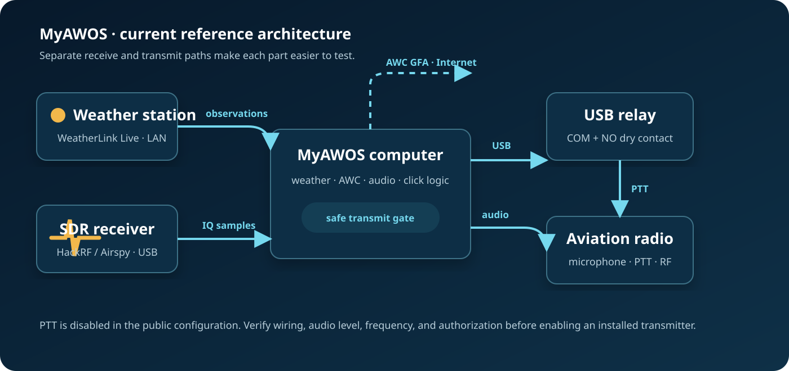
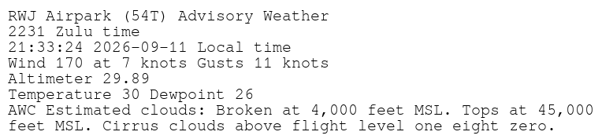

01
Observe
Read a local WeatherLink Live station and validate its own observation timestamp.
MyAWOS turns local weather, aviation forecasts, an SDR receiver, and a connected radio into an on-demand spoken airport weather report.
MyAWOS keeps acquisition, report generation, click detection, and transmission separate. That makes the installation testable in safe stages—and makes stale weather much harder to mistake for live conditions.
Read a local WeatherLink Live station and validate its own observation timestamp.
Add rate-limited AWC GFA cloud guidance, clearly labeled as an estimate.
Build matching voice, text, and PNG products from the same weather snapshot.
Use HackRF or Airspy and a noise-relative detector to count the click sequence.
Key a purpose-built radio with a dry-contact USB relay and play the current WAV.
Receive a daily status report and optionally capture radio audio with metadata.
The SDR receives only. The aviation radio transmits. The USB relay closes PTT like a switch. Weather and cloud inputs remain visibly distinct all the way to the output.

The station-provided observation time is authoritative. After 12 hours without a valid observation, the voice and graphic say “No weather available at this time” and omit the old values.

Full MyAWOS exposes the complete station, radio, capture, and operations toolchain. MyAWOS Lite packages the essential click-to-weather path for a simpler first installation.
Weather products, AWC clouds, radio control, capture options, daily status, and detailed configuration.
Start the full build →A smaller downloadable package, guided setup, and fewer moving parts.
Open the Lite site →Earlier Arduino and analog-detector versions remain in Git for reference, not as the recommended path.
See how the design evolved →